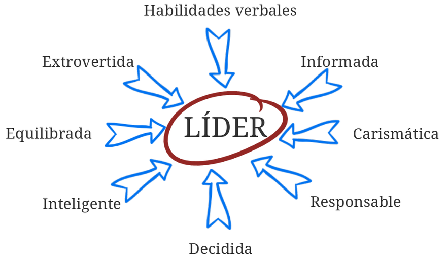

Liderazgo
Influencia Social y Grupos
Juan Muñoz
Universitat Autònoma de Barcelona
http:/juan.psicologiasocial.eu

Liderazgo
Un proceso de influencia social mediante el que las personas consiguen y movilizan la ayuda de otras para la consecución de metas colectivas.
Chemers, 2001
Teoría rasgos
Desde el momento de su nacimiento algunas personas están marcadas para la servidumbre y otras para el mando.
Aristóteles
Rasgos Liderazgo

Teorías implícitas
Muchos miembros creen que sus líderes deben ser inteligentes, extrovertidos, masculinos, sensibles, dominantes, conservadores y equilibrados, de forma que esas serán las características que poseerán los líderes
Lord et al. 1986
Teoría de la categorización del líder
El líder es el miembro del grupo que es considerado como más prototípico del mismo (en términos de la teoría de la autocategorización)
Estilos de liderazgo
https://www.youtube.com/watch?v=xiUX7tuCUBI
Estilos de liderazgo: Efectos
- El líder autoritario genera apatía y agresividad entre los miembros del grupo. Se produce un clima socioafectivo negativo y muy poca cohesión. En cuanto al trabajo o el rendimiento es bueno cuando el líder esta presente, pero decrece rápidamente en su ausencia.
- El liderazgo democrático provoca en el grupo que el rendimiento sea elevado y estable, incluso cuando el líder esta ausente. Los miembros del grupo se sienten más satisfechos.
- El peor rendimiento lo tienen los grupos con un líder liberal. Son grupos que se pueden calificar de activos improductivos y tienen un clima socioafectivo negativo.
Tarea vs. relaciones

Rejilla de liderazgo (Blake y Mouton)

Modelos interaccionistas
El éxito de un líder no depende de sus características, ni del estilo que domine, sino de la interacción entre sus características y las de la situación.